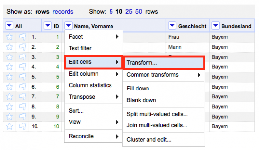
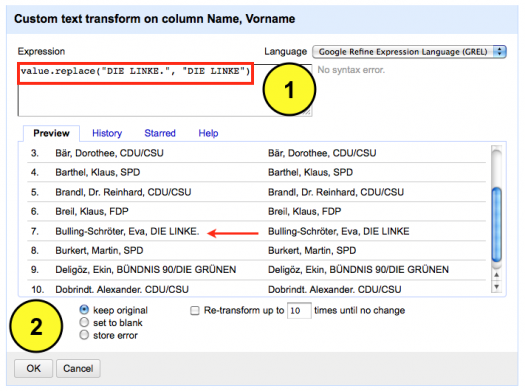

Im Rahmen der Datenbereinigung kommt man um die Suchen und Ersetzen Funktion nicht herum. Die Herangehensweise erkläre ich wie immer anhand meines manipulierten Datensatzes, der hier heruntergeladen werden kann. Dabei werde ich ein Element innerhalb des Datensatzes, der Informationen über die Mitglieder des Bundestages (MdB) enthält, modifizieren bzw. korrigieren. Dazu nutze ich wieder OpenRefine.
In der Spalte Name, Vorname ist neben dem Namen und Vornamen auch die Parteizugehörigkeit aufgeführt. Hier habe ich einen kleinen Fehler eingebaut. Die Parteikennung “DIE LINKE.” ist durch einen Punkt am Ende verunreinigt. Diesen will ich entfernen bzw. durch die korrekte Ausprägung “DIE LINKE” ersetzen. Dazu wähle ich das Drop Down Menü der Spalte aus und bewege die Maus über den Menüpunkt Edit cells und wähle dann anschließend die Funktion Transform aus.

Eine Eingabemaske öffnet sich. Folgende Syntax gebe ich jetzt in die Konsole ein value.replace(“DIE LINKE.”, “DIE LINKE). Mit dem Befehl wird OpenRefine angewiesen die Spalte “Name, Vorname” nach der Ausprägung “DIE LINKE.” zu durchsuchen und diese durch die neue Bezeichnung “DIE LINKE” zu ersetzen. Im Preview Fenster ist die erfolgreiche Transformation in Zeile 7 bereits sichtbar. Ich bestätige die Eingabe durch OK und schließe damit die Transformation ab.
